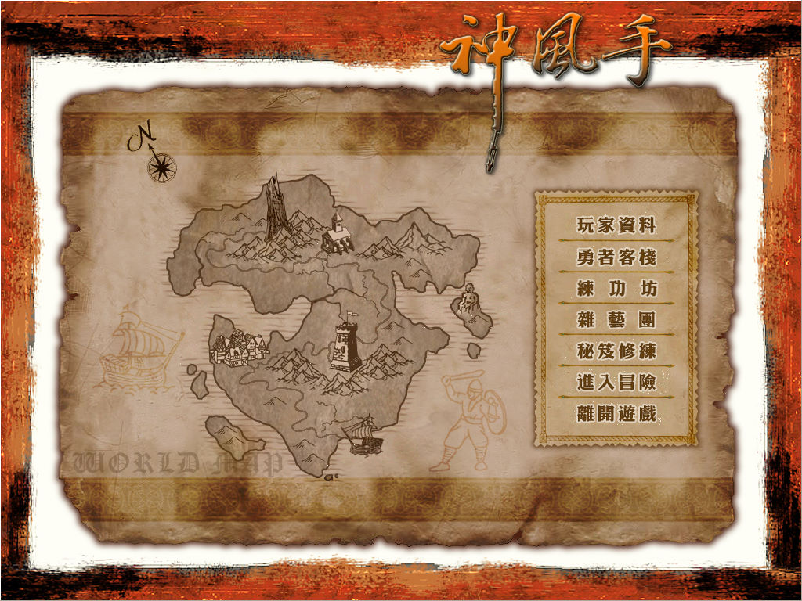
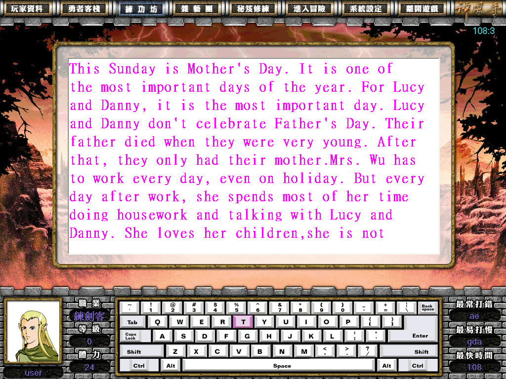
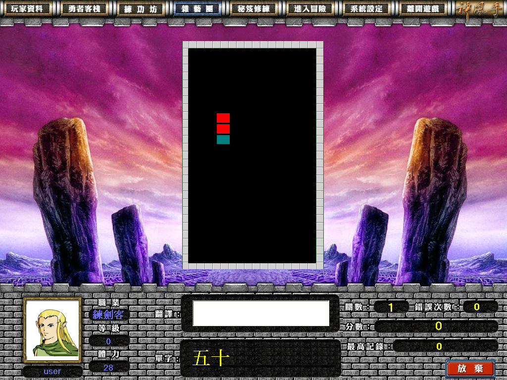
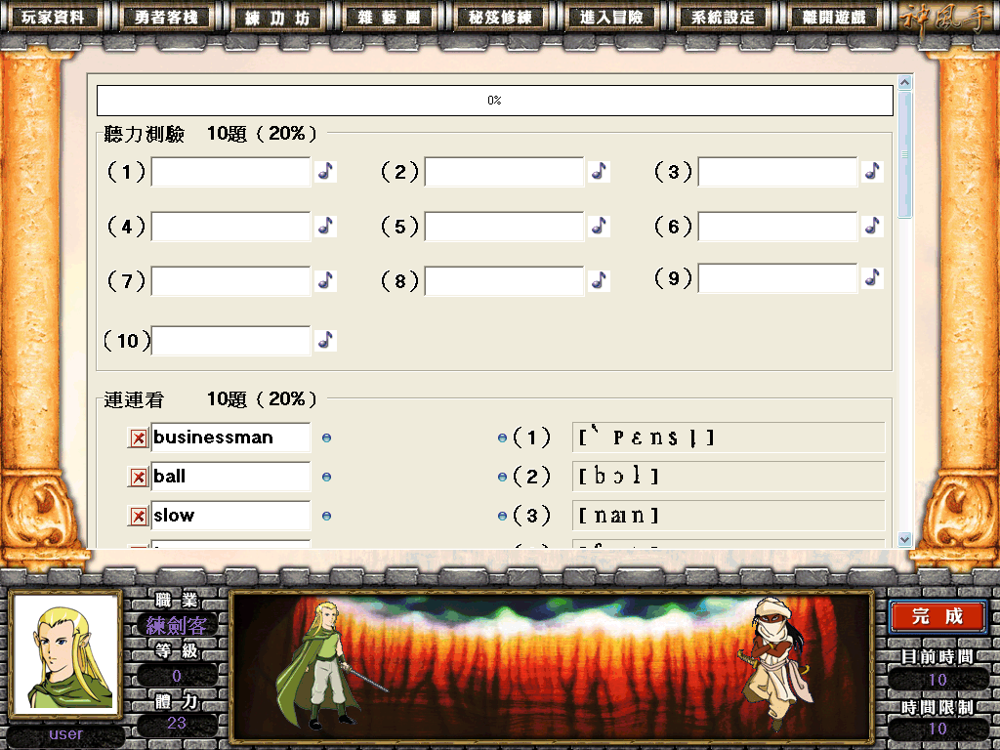

名稱：神風手 (中文版) 簡介：學習工場2003年出品的英文打字與單字、聽力學習軟體 [待補]。



備註：本遊戲第6片（第二更新片）壞軌待修。 保護：金鑰磁片，破解碼（修改input.exe）： 以下均須修改setup.ini中floopy_path路徑為.\，並建立空的system_32.dll（或使用執行過 各版後，所產生有資料的的system_32.dll檔案）。 1.原始4CD版 40 00 55 8B EC B9 11 00 00 00 6A -- -- B8 01 00 00 00 C3 -- -- -- 2.第一更新片後（2003/9/9） input.exe FF 85 C0 0F 8E 94 -- -- -- -- 8F -- 80 B9 F2 FF 85 C0 0F 8E -- -- -- -- -- -- -- 8F 39 00 55 8B EC B9 13 00 00 00 6A -- -- B8 01 00 00 00 C3 -- -- -- 授權碼畫面隨意輸入對應碼可通過。使用已有資料的system_32.dll，不會出現授權碼畫面。 3.第二更新片後（2003/10/20） input.exe FF 85 C0 0F 8E 94 -- -- -- -- 8F -- F2 FF 85 C0 0F 8E -- -- -- -- -- 8F 83 F8 05 0F 8E F1 06 00 00 -- -- -- 90 90 90 90 90 90 00 00 55 8B EC B9 13 00 00 00 6A -- -- B8 01 00 00 00 C3 -- -- -- 授權碼畫面隨意輸入對應碼可通過。使用已有資料的system_32.dll，不會出現授權碼畫面。 4.第三更新片後（2004/6/30） input.exe C0 0F 8E 8E -- -- 8F -- 85 C0 7E 6E -- -- 7F -- C0 0F 8E 72 -- -- 8F -- D0 94 F1 FF 85 C0 0F 8E -- -- -- -- -- -- -- 8F 83 F8 05 0F 8E DA 06 00 00 -- -- -- 90 90 90 90 90 90 00 00 55 8B EC B9 13 00 00 00 6A -- -- B8 01 00 00 00 C3 -- -- -- 註冊畫面對應碼一與對應碼二輸入相同的數字後，按下確定可通過註冊。使用已有資料的 system_32.dll，不會出現註冊畫面。 5.第四更新片後（2006/1/1） input.exe FF 85 C0 0F 8E D0 -- -- -- -- 8F -- F3 FF 85 C0 7E 15 -- -- -- -- 7F -- C0 0F 8E 72 -- -- 8F -- EF EB FF 85 C0 0F 8E -- -- -- -- -- -- 8F 83 F8 05 0F 8E DA 06 00 00 -- -- -- 90 90 90 90 90 90 00 00 55 8B EC B9 13 00 00 00 6A -- -- B8 01 00 00 00 C3 -- -- -- 在輸入網路帳號資料時選擇[使用金鑰匙]，註冊畫面對應碼一與對應碼二輸入相同的數字 後，按下確定可通過註冊。使用已有資料的system_32.dll，不會出現註冊畫面。 6.第五更新片後（2009/10/24，Ver.20070815） input.exe FF 85 C0 0F 8E D0 -- -- -- -- 8F -- F3 FF 85 C0 7E 15 -- -- -- -- 7F -- C0 0F 8E 72 -- -- 8F -- 84 EB FF 85 C0 0F 8E -- -- -- -- -- -- 8F 4B 00 00 55 8B EC B9 21 00 00 00 -- -- -- 33 C0 40 C3 -- -- -- -- 83 F8 05 0F 8E DA 06 00 00 -- -- -- 90 90 90 90 90 90 00 00 55 8B EC B9 13 00 00 00 6A -- -- B8 01 00 00 00 C3 -- -- -- E8 A6 AD E3 FF 85 C0 75 0E -- -- -- -- -- -- -- EB -- E8 24 CE E3 FF 74 0C -- -- -- -- -- EB -- 在輸入網路帳號資料時選擇[使用金鑰匙]，註冊畫面對應碼一與對應碼二輸入相同的數字 後，按下確定可通過註冊。使用已有資料的system_32.dll，不會出現註冊畫面。 備註：初始4CD安裝時，必須分別執行光碟中的執行檔進行安裝（共四次）。 備註：第三更新片（2004）之後的光碟均為獨立安裝片，不必從原始4CD開始安裝起。 限制：螢幕解析度必須為1024x768才能執行，可按後述修改碼修改去除。 備註：玩家資訊記錄在user.ini與system_32.dll中，若要重新開始，將這兩個檔案刪除，然 後建立空的system_32.dll，再重新執行即可（setup.ini裡記錄的userinfo也可刪除）。 修改：input.exe 1.去除螢幕解析度限制1024x768（但若非1024x768，部份文字顯示位置可能會不正確） 74 21 6A 00 66 8B 0D EB -- -- -- -- -- -- 2.切回桌面時不會跳出遊戲（忽略遊戲自行送出的Exception） 09 C0 75 0A B8 D8 00 00 00 -- -- EB 23 -- -- -- -- --